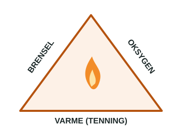
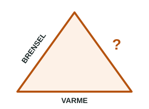

Forbrenning – fullstendig og ufullstendig
Kjeler, ovner, fakler og motorer bruker forbrenning for å lage varme og energi. Når det er for lite oksygen, dannes den giftige gassen karbonmonoksid. Derfor er forbrenning både et kjemitema og et HMS-tema.
Hva er forbrenning?
Forbrenning er en reaksjon mellom et brennbart stoff (brensel) og oksygen. Reaksjonen gir fra seg varme. Ofte går den fort, med flamme.
Mange brensler er hydrokarboner: stoffer som bare består av karbon og hydrogen, for eksempel metan og propan. Bensin og diesel er blandinger av mange hydrokarboner.
For at noe skal brenne, trengs tre ting: brensel, oksygen og varme til å tenne. Det kalles branntrekanten. Fjerner du én av dem, stopper brannen. Brannteppet tar for eksempel bort oksygenet, og vann kjøler ned.
Bruk aldri vann på brennende olje eller fett. Vannet fordamper eksplosivt og sprer brannen. Bruk lokk eller brannteppe. Vann skal heller ikke brukes på brann i elektrisk utstyr som står under spenning.

Fullstendig forbrenning
Når et hydrokarbon får nok oksygen, blir alt karbonet til karbondioksid, og alt hydrogenet blir til vann. Det kalles fullstendig forbrenning.
Metan (naturgass): \( \ce{CH4 + 2O2 -> CO2 + 2H2O} \)
Propan: \( \ce{C3H8 + 5O2 -> 3CO2 + 4H2O} \)
Ufullstendig forbrenning
Når det er for lite oksygen, blir ikke alt karbonet til CO2. Det dannes i stedet karbonmonoksid (CO) og sot (små partikler som for det meste er karbon). Dette kalles ufullstendig forbrenning. Flammen blir gul og soter, og det frigjøres mindre varme.
\[ \ce{2CH4 + 3O2 -> 2CO + 4H2O} \]
CO er en giftig gass uten farge og lukt. Den binder seg til hemoglobinet i blodet mye sterkere enn oksygen gjør, slik at kroppen ikke får nok oksygen. Du merker det først som hodepine, svimmelhet og kvalme. Bruk aldri grill, aggregat eller gassbrenner innendørs. Der det kan dannes CO, skal det være god ventilasjon og gassvarsler.
Eksempel
Etan (C2H6) brenner fullstendig. \( \ce{C2H6 + O2 -> CO2 + H2O} \)
- Karbon: 2 til venstre. Sett 2 foran CO2.
- Hydrogen: 6 til venstre. Sett 3 foran H2O.
- Oksygen til høyre: \( 2 \cdot 2 + 3 = 7 \). Det gir 3,5 O2, og det er ikke et helt tall.
- Gang alle koeffisientene med 2.
Svar: \( \ce{2C2H6 + 7O2 -> 4CO2 + 6H2O} \). Kontroll: 4 C, 12 H og 14 O på hver side.
Forbrenning og miljø
Fullstendig forbrenning av olje, gass og kull gir CO2, som er en klimagass. Ufullstendig forbrenning gir i tillegg CO og sot, som er helse- og miljøskadelig. Ved høy temperatur reagerer også nitrogen og oksygen i lufta og danner nitrogenoksider (NOx). Inneholder brenselet svovel, dannes svoveldioksid (SO2). Begge gir sur nedbør og luftforurensning. I industrien styres derfor lufttilførselen nøye, slik at forbrenningen blir så fullstendig som mulig. Mer om utslipp lærer du i tema 9.
Test deg selv
Hva mangler i branntrekanten?

- vann
- oksygen
- karbondioksid
Det trengs brensel, oksygen og varme for at noe skal brenne.
Hva dannes ved fullstendig forbrenning av et hydrokarbon?
- CO2 og H2O
- CO og H2O
- C og H2
Med nok oksygen blir alt karbon til CO2 og alt hydrogen til vann.
Hvorfor er ufullstendig forbrenning farlig?
- Den gir for mye varme.
- Det dannes CO, som er en giftig gass uten lukt.
- Det dannes for mye oksygen.
CO hindrer blodet i å frakte oksygen. Du merker ikke gassen.
Hva er riktig koeffisient foran O2 i \( \ce{C3H8 + ?O2 -> 3CO2 + 4H2O} \)?
- 3
- 5
- 7
Til høyre: 3 · 2 + 4 = 10 O. Det gir 5 O2.
Hvordan slukker et brannteppe en brann?
- Det kjøler ned brenselet.
- Det stenger oksygenet ute.
- Det fjerner brenselet.
Uten oksygen mangler én side i branntrekanten, og brannen stopper.
Ordliste
| Begrep | Forklaring | Engelsk |
|---|---|---|
| forbrenning | Reaksjon mellom et brennbart stoff og oksygen, der det frigjøres varme. | combustion |
| brensel | Stoff som kan brenne, for eksempel gass, olje, ved eller koks. | fuel |
| branntrekanten | De tre tingene som må være til stede for at det skal brenne: brensel, oksygen og varme. | fire triangle |
| hydrokarbon | Stoff som bare består av karbon og hydrogen, for eksempel metan og propan. | |
| fullstendig forbrenning | Forbrenning med nok oksygen. For et hydrokarbon dannes bare CO2 og vann. | |
| ufullstendig forbrenning | Forbrenning med for lite oksygen, der det også dannes CO og sot. | |
| karbonmonoksid | Giftig gass (CO) uten farge og lukt, som dannes ved ufullstendig forbrenning. | carbon monoxide |
Les mer
- Kjemien stemmer, kapittelet om kjemiske reaksjoner og energi.
Om kildene: Teksten, eksemplene og figurene på denne siden er laget for dette nettstedet. Siden bygger på undervisningsopplegg i kjemiprosess- og laboratoriefag ved Sauda vgs, som er utarbeidet med utgangspunkt i blant annet Kjemien stemmer, Laboranten og åpne nettkilder.